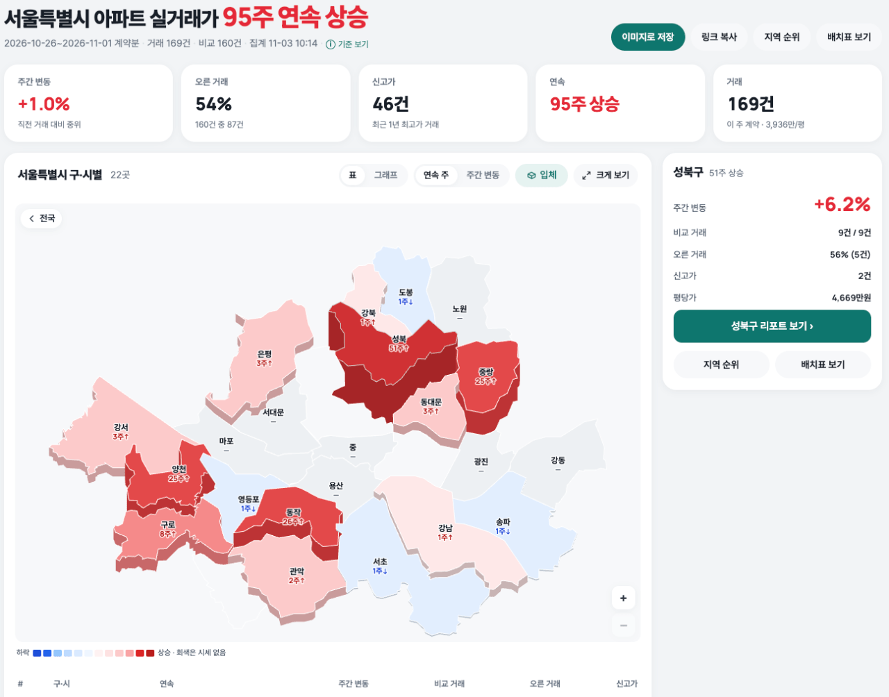

출처: https://ladderprice.com/weekly/%EC%84%9C%EC%9A%B8%ED%8A%B9%EB%B3%84%EC%8B%9C?view=table
100주가 농담이 아니게됨

출처: https://ladderprice.com/weekly/%EC%84%9C%EC%9A%B8%ED%8A%B9%EB%B3%84%EC%8B%9C?view=table
100주가 농담이 아니게됨
못삼 토허제 때문에
토허제 안걸린 지역이면 안사는게 맞고
아하!토허제 걸린 광주광역시 아파트 풀매수 드개재
지금 보는곳이 분당쪽인데 분당에 두채 가지면 어떻게 되나요?
유주택자는 갭투자가 안됨
토허제 지역 내 세낀 매물은 무주택자만 구매가능
부동산 관심도 없었는데 덕분에 배웠습니다
하... 갑자기 맥빠지네
지금은 분당이 오르고 강남이 조정받은 시기라 자금되면 이럴때 반포나 잠실로 갈아타는것도 괜찮지
이제와서 다주택 메타는 비추.. 세금 때문에 재미못봄
지금 집 처분해도 거기까지는 무리네요
부동산에대해 공부하려면 입지를 먼저봐야할까요? 아니면 부동산 정책이나 법을 먼저봐야할까요?
질문이 너무 포괄적이고 개인의 상황마다 다른거라 뭐라 답하기 힘드넹
정책이나 세법은 필수고 입지는 뭐.. 어려울거 있나 가격이 말해주는데 그냥 애매한 서울보다 경기남부가 비전있다 정도?
가질 수가 없어요. 나라에서 허가를 안해줘요 ㅋ 이렇게 아무것도 모르는데 댜주택 투자? ㅋ
지금 다주택자로 가는건 좀 그래
걍 덜똘똘한 한채 가지고있는게 최선임
돌대가리들이 대박인게, 아직도 집값 오르는게 '다주택자나 1주택자나 내 주택 가격 오르기를 바란다는 심리를 놓쳤음.'이라는 희대의 애미뒤진 개소리를 하는놈이 아직도 있더라 ㅋㅋㅋㅋㅋㅋㅋㅋㅋㅋㅋㅋㅋㅋㅋㅋㅋ
심리때문에 폭등중이래 ㅋㅋㅋㅋㅋㅋㅋㅋㅋㅋㅋㅋㅋㅋㅋㅋㅋㅋㅋㅋㅋㅋㅋㅋㅋ
지 자산 싸게팔고싶은놈이 있긴 한가 ㅋㅋㅋㅋㅋㅋ
사무관 하는 지친구가 지말이 맞다고 했다면서 우기는데 ㅈㄴ웃김ㅋㅋㅋㅋㅋㅋㅋㅋㅋㅋㅋㅋ
결국 수요를 조져서 잡냐 아님 공급으로 잡냐 모두 다 적절하게 쓰냐 이건데
지금은 공급은 마땅한 부지도 없고, 단기간에 성과낼 수 없으니 전형적인 수요 억제책으로 부동산 시장에 도전한거지
근데 공급 대책이 부재한 수요 억제책은 지금까지 우리가 몇 차례나 실패한 전적을 봤음
이번에는 다르다는 것도 외부 요인이 받쳐줘야 가능한 이야기인데 통제 불가능한 외부요인에 걸고 마땅한 공급책 없이 수요 억제만으로 집값 잡겠다는건 도박수 던진거나 다름없지
그것도 도박수 던질 입장도 타이밍도 아니었는데 말이지
결국 과거 실패한 정책과 근본적으로 차이가 없음도 인지하지 못했고, 타이밍마저 최악이었음
뻔한 오답을 100% 확률로 고르고 있으니 집값 상승을 의도한거라는 소리까지 나오지
수요 억제하겠답시고 규제를 추가하고 금리 올리는데 공급이 어떻게 되겠음...결국 실패로 귀결될 수밖에 없는 정책임.
ㅇㅇ 대다수 전문가들도 결과는 뻔하다고 말하고, 심지어 전문가도 아닌 연예인조차 답을 예측하던 뻔한 정책이었음
그야말로 기적같은 외부요인이 발생하지 않는 이상 답이 정해진 공식이었음에도 나중에 말장난이나 치고 있는 꼴 보고는 대가리 깨짐
반대정권: 집값 미쳤네? 정부 집값 잡는거 포기했냐?
지지정권: 원래 서울 집값은 오르는게 정상이다
서울집값 잡겠다 -> 전국에 1가구 1주택 규제는 첨보는 초식이여 인구감소지역도 1가구 1주택이여 병신들도 아니고 눈가리고 아웅임
아 든든해
지금이라도 사라
백주 드가자
진짜 전설을 쓰네 대단하다 진짜
집한채 갭투자로 더 살려는데 지금시점 맞는거냐